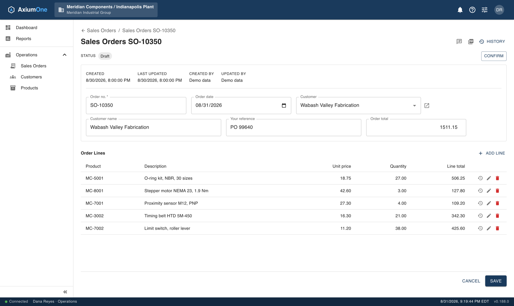
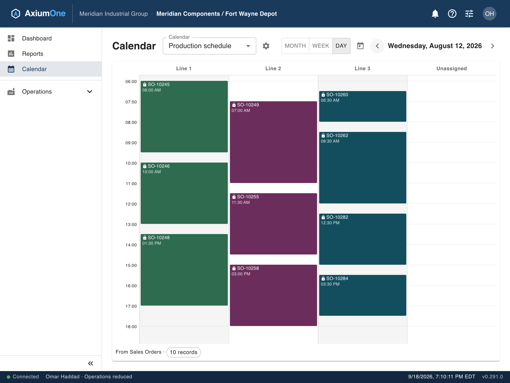

An ERP platform your team shapes to the way it already works — configured in the browser, governed from day one, and running on infrastructure you choose.
Define what you actually work with — orders, assets, inspections, whatever your operation calls them — and the platform builds the tables, forms and grids to match.

Separation between organizations, companies and branches is built into the foundation rather than bolted on — so who sees what is a setting, not a project.
Any object you have modelled with a date becomes a calendar — the same records your team already works in, laid out across a month, a week or a single day. There is no separate scheduling module and no second copy of the data.

Reporting runs over the same records your team works in every day — scoped to what each person is allowed to see, with no extract, no warehouse and no waiting.
Where your data lives, and what touches it, is a decision you make — not one the software makes for you.
The quickest way to judge a platform like this is to point it at something you actually do. Bring us a process and we will show you how it would be configured.
Book a demo